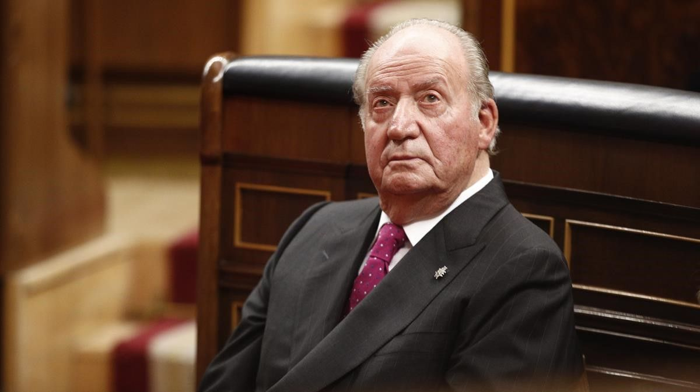

Arrasa la abstención en las elecciones de Nicolás Maduro: solo votó el 31% del censo
En Venezuela ganó la abstención de forma tan avasalladora que el chavismo tardó varias horas en presentar unos datos maquillados tras una jornada que pasará a la historia por las calles vacías y la soledad de los centros electorales. Según los datos al 82% del escrutinio, aportados de madrugada por Indira Alfonzo, presidenta del Consejo Nacional Electoral (CNE), sólo fueron más de 5 millones de personas, el 31% del censo electoral, quienes acudieron a depositar su voto. Por lo tanto, un 69% de abstención. De esta forma, el chavismo cantó victoria sin gran entusiasmo, pese a presentar resultados inflados gracias a los mecanismos de coacción social, desplegados durante todo el día, y por la Operación Remate, ordenada por Nicolás Maduro a última hora. "¡Felices madrugadas de victoria!, clamó el "hijo de Chávez" desde un despacho, olvidadas ya las fiestas populares en el Balcón del Pueblo. "Gran victoria, sin lugar a dudas, de la democracia. El pueblo ha elegido a sus nuevos diputados y hemos tenido una gigantesca victoria electoral, como tantas veces. Viene un ciclo positivo y virtuoso, de trabajo y superación, de recuperación del país y superación del bloqueo", exclamó Maduro. Expertos electorales estimaban, por el contrario, que sólo habrían votado entre el 25% y el 30% del electorado. El Observatorio Contra el Fraude, creado por el Parlamento, reducía aún más esa estimación para situarla en torno al 20%. La comparativa con las anteriores elecciones parlamentarias, la histórica victoria opositora de 2015, sirven para medir el fracaso de la convocatoria chavista. Hace cinco años votaron más de 14 millones de personas, el 71% del censo electoral frente al 29% de abstención. Aquel día miles de ciudadanos abarrotaron los centros electorales, mientras que ayer las únicas colas largas se vivieron, una vez más, juntos a las estaciones de gasolina. Tal y como ya se sabía, el bloque chavista obtuvo la mayoría de los votos, con el 67,6% de los apoyos, frente a la principal alianza conformada por los grupúsculos denominados "opositores", con el 17,95% de los votos. La coalición conformada por la versión fake de Acción Democrática, el ex gobernador chavista Henri Falcón, el evangélico Javier Bertucci y Timoteo Zambrano, el hombre de José Luis Rodríguez Zapatero, ni siquiera alcanza un millón de votos en el primer boletín. "La dictadura se evidencia. Luego del chantaje, el secuestro de partidos, censura, fabricar resultados, infundir terror, anuncian lo dicho: un fraude con 30% de pura falsedad, que no le son suficientes ni para mostrarse en público. Ni ellos lo celebran, se saben solos", criticó Juan Guaidó, presidente encargado que cuenta con el apoyo de las principales democracias del planeta. Pese al levantamiento de la cuarentena radical por motivos electoralistas, el país criollo apostó ayer por su propio confinamiento. La demostración ciudadana fue de tal calibre que dejó sin palabras al líder de los militares, el general Vladimir Padrino López. El ministro de Defensa, acostumbrado a extensas peroratas, resumió la jornada con sólo cinco palabras: "No hay mucho que decir". Realmente sí hay mucho que contar, empezando por las trampas desplegadas por el chavismo, en especial la famosa Operación Remate, puesta en marcha por el propio Maduro. El "hijo de Chávez" contó con la connivencia del Consejo Nacional Electoral (CNE), que prorrogó el cierre de los colegios por supuesta presencia de votantes cuando habían permanecido en soledad todo el día. El operativo chavista, maquillaje electoral de última hora, se prolongó hasta bien avanzada la noche en zonas populares, tal y como se desveló en vídeos filtrados en las redes sociales. "Apartamento por apartamento tocan la puerta con mucha responsabilidad, con mucha decencia. Es por la revolución, es por la patria. Vamos a sacar a la gente, están confundidos. Hay que hacerlo", ordenaba el jefe del comando a una veintena de personas, incluidos milicianos uniformados a la puerta de un edificio en el estado costero de Vargas. A través de las redes sociales también se filtraron los mensajes desesperados de gobernadores y alcaldes para empujar el voto de la gente. "Somos un municipio derrotado, pónganse las pilas y vamos al remate de manera inmediata", imploró el alcalde chavista Farith Fraija. "Aprieten, porque no estamos conformes con los resultados", arengó el gobernador Jorge García Carneiro.
Juan Carlos I traslada su intención de regresar a España en Navidad pero Zarzuela es reticente
Juan Carlos I ha comunicado a su entorno que desea volver a España por Navidad, con la intención de pasar unos días en el Palacio Real. La Casa del Rey, según informa El Mundo, se muestra reticente a que el rey emérito regrese a Zarzuela y está analizando la situación. El anterior Jefe del Estado lleva diciendo a sus allegados que desea volver a España casi desde que se fue a Emiratos Árabes a principios de agosto, marcha motivada por sus negocios opacos. Juan Carlos pretende acometer el retorno a España cuando se den las circunstancias adecuadas, de ahí que nunca materializará su deseo "sin el visto bueno de La Zarzuela y el Ejecutivo". De producirse esto, haría un planteamiento oficial. Hace unas semanas, poco antes de que Antiblanqueo remitiera a la Fiscalía su última alerta, en la que denuncia que el emérito oculta fondos en la isla de Jersey y que ha llevado a cabo movimientos de forma muy reciente, Juan Carlos había comunicado a la Casa del Rey que estaba totalmente "decidido" a volver para pasar unos días en Madrid coincidiendo con la Navidad. Sin embargo, el informe del Sepblac (Servicio Ejecutivo de la Comisión de Prevención del Blanqueo de Capitales e Infracciones Monetarias), dependiente del Ministerio de Economía, trastocó sus planes. La Fiscalía General del Estado anunció que abría nuevas diligencias contra el anterior Jefe del Estado y, además, el diario de Unidad Editorial desveló que afectaban a la tenencia de fondos no declarados en las Islas del Canal de la Mancha a través de un trust cuyo origen se remonta a la década de los noventa. El rey emérito se mostró molesto por la filtración de una información por parte del Ministerio Público que considera falsa. Ahora, Juan Carlos I está estudiando con sus asesores la posibilidad de regularizar los fondos recibidos durante los últimos años por parte del empresario mexicano Allen Sanginés-Krause y que gestó utilizando como testaferro a un coronel del Ejército del Aire.

Presionan a Biden para que incluya más negros en su Gobierno
En los momentos en los que esta campaña estaba en su punto más bajo, la comunidad afroamericana se levantó por mí de nuevo. Siempre me habéis defendido y yo os defenderé». Joe Biden pronunció estas palabras el pasado 7 de noviembre en Wilmington (Delaware), en su discurso de victoria, cuando todos los grandes medios le proyectaron como ganador de la elección presidencial. Ha pasado casi un mes desde entonces, el equipo de transición para su presidencia está en marcha, ha anunciado decenas de nombramientos, y muchos entre la minoría negra creen que no está cumpliendo: le exigen que esas palabras se conviertan en mayor presencia de altos cargos en los puestos de máxima responsabilidad. En ese mismo discurso, Biden dijo que había cumplido con su promesa de formar una campaña que «representara y se pareciera a EE.UU.». Y que, una vez ganadas las elecciones, también quería que eso ocurriera en su Administración. Es innegable que Biden busca pergeñar un equipo de Gobierno con diversidad de género, racial y de identidad sexual. Hay muchos nombres de hispanos y negros, y su Gabinete apunta a ser el que tenga más mujeres y miembros de la comunidad LGBT en la historia del país. Pero las alarmas entre congresistas y activistas negros se deben al menor peso que ha tenido su minoría en los nombramientos.
Ninguno de los puestos de máxima relevancia conocidos hasta ahora en el Gobierno ha ido a parar a una persona negra. Ni el secretario de Estado ( Antony Blinken), ni la secretaria del Tesoro (Janet Yellen), ni el secretario de seguridad nacional (Alejandro Mayorkas, un hispano), ni la directora nacional de inteligencia (Avril Haines), ni la secretaria de Prensa (Jen Psaki) pertenecen a esa minoría. Tampoco hay negros entre los puestos de máxima confianza dentro de la Casa Blanca, como el de jefe de Gabinete (Ron Klain) o el asesor de seguridad nacional (Jake Sullivan). «Quiero ver en qué acaba este proceso, qué produce», dijo a «The Hill» hace unos días James Clyburn, el congresista negro de más alto rango en la Cámara de Representantes. «De momento, no ha ido muy bien». La advertencia de Clyburn tiene mucho peso. Él fue una pieza instrumental en la victoria de Biden en las primarias demócratas. Cuando su campaña iba a la deriva, con resultados decepcionantes en los estados de Iowa y New Hampshire, con las arcas en bancarrota, Clyburn le dio su apoyo poco antes de las primarias de Carolina del Sur, donde la mayoría del electorado demócrata es negro. Biden ganó aquel estado y resucitó su campaña. Esa victoria fue justo lo que necesitaba el «establishment» demócrata para ponerse de su lado, y el resto fue historia: Biden se impuso con claridad a su principal rival, el izquierdista Bernie Sanders. «Creía que a estas alturas vería más afroamericanos en los nombramientos para los puestos más altos», protestó la congresista Bonnie Watson Coleman esta semana en «The Washington Post». A la vez que los legisladores, varias organizaciones de derechos civiles se han quejado de que Biden parece incumplir su promesa y de que no quiere reunirse con ellos. «Sin el apoyo de la comunidad negra, no hubiera ganado», aseguró Derrick Johnson, presidente de la NAACP, una organización histórica a favor de los derechos de las minorías raciales. La movilización el pasado noviembre del voto negro fue clave en la victoria de Biden. En 2016, a Hillary Clinton se le escaparon varios estados -Míchigan, Wisconsin o Pensilvania-, porque buena parte del voto negro en las ciudades se quedó en casa. Ahora Biden lo ha recuperado y se ha impuesto en todos esos estados.